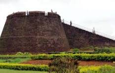
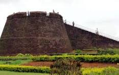
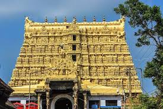
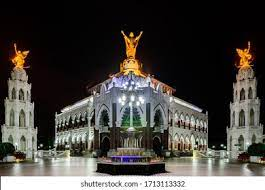

Bekal Fort

Bekal Fort
Art gallery

Banasura hill

Fort Kochi

Indias most verdant state ,rated by National Geographic Traveller as
one of the worlds 50 must-see destinations, is a paradisiacal
landscape of palm-lined beaches, steamy jungles, plantation-covered
hills, and tropical rivers and lakes. Visitors come here primarily to
unwind and indulge; this is, after all, where succumbing to a
therapeutic Ayurvedic massage is as mandatory as idling away an
afternoon aboard a slowly drifting kettuvallam, or sipping coconut
water under a tropical sun before taking in a wonderfully ritualized
Kathakali dance. Eastward, the spice-scented Cardamom Hills and wild
elephants of Periyar beckon, while a short flight west takes you to the
little-known but sublime tropical reefs of the Lakshadweep islands. A
thin strip on the southwest coastline, sandwiched between the
Lakshadweep Sea and the forested Western Ghats that define its
border with Tamil Nadu to the east, Kerala covers a mere 1.3% of the
countrys total land area, yet its rich resources have long attracted
visitors from across the oceans. It is in fact here that the first seafarers
set foot on Indian soil. It is believed that Kerala has had trade links
with Egypt,Rome, Arabia and China.
Contemporary Kerala was created in 1956 from the former
princely states of Travancore, Kochi, and
Malabar. Largely ruled by benevolent Maharajas who introduced social reforms emphasizing the
provision of
education and basic services, Kerala remains one of the most progressive, literate, and educated
states in
post-independence India. In 1957, it became the first place in the world to democratically elect a
Communist government, and the first Indian state to successfully introduce a family-planning
programme.
Thiruvananthapuram
Kottayam

Banasura hill
Ernakulam
Banasura hill
Ernakulam